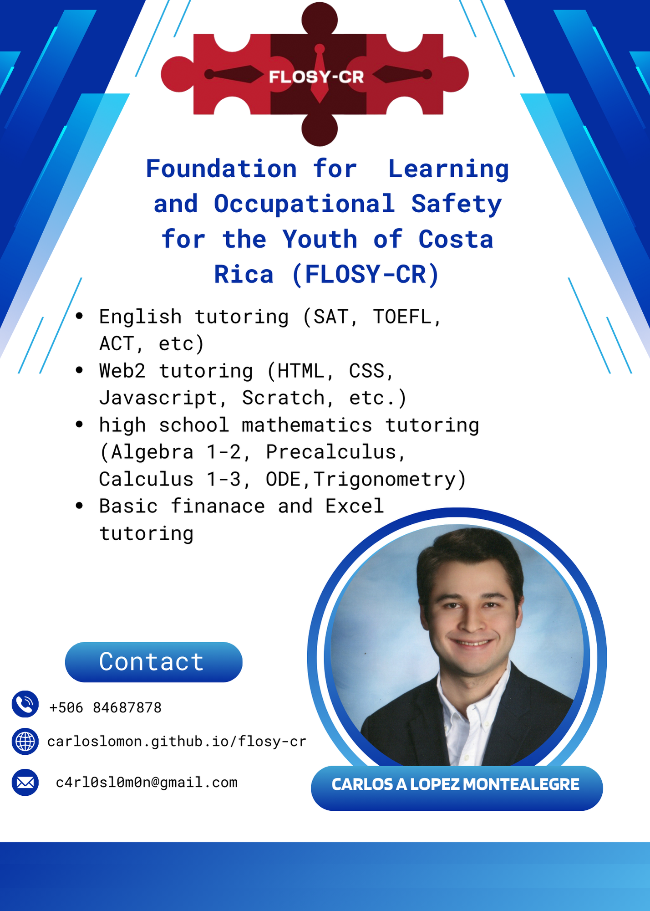

What is the Foundation for Learning and Occupational Safety for the Youth of Costa Rica (FLOSY-CR)?
The Foundation for Learning and Occupational Safety for the Youth of Costa Rica (FLOSY-CR) was created with the purpose of raising awareness among Costa Rican society about the economic challenges faced by young people under the age of 24 and addressing the lack of work experience and the shortage of human talent within this demographic. FASOJ-CR highlights that between June and August 2024, only 38% of young people between the ages of 15 and 24 are participating in the labor force, gaining experience. Of the 268,225 young people in this age group, only 211,862 are employed, while 56,663 remain unemployed, resulting in a youth unemployment rate of 21%.
FASOJ-CR's central hypothesis is that the majority of these 268,225 young people face significant economic difficulties. Therefore, the foundation seeks to collect more data to validate this hypothesis. However, regardless of economic conditions, FASOJ-CR is committed to providing specialized tutoring in Web2, Microsoft Suite, English, highschool mathematics (Algebra 1-2, Trigonometry, Precalculus, Calculus 1-3, and ODE), (SAT/ACT, TOEFL, etc.), and basic finance to promote social mobility and improve employability.
Additionally, FASOJ-CR promotes digital and bilingual (Spanish and English) literacy from an early age as fundamental pillars for helping young people gain early work experience. In fact, the foundation supports individuals under the age of 15 to acquire the necessary tools to secure summer internships during their high school and university years. In this way, promoting internships among high school and university students will help increase productivity, competitiveness, and the development of human talent in Costa Rica’s economy.
Mission: The Foundation for Learning and Occupational Safety for the Youth of Costa Rica (FASOJ-CR) aims to exclusively train Costa Ricans under the age of 24 in Web2, Microsoft Suite, high school mathematics, English (SAT/ACT, TOEFL, etc.), and basic finance, in order to promote social mobility, improve productivity, and strengthen economic competitiveness in Costa Rica. Furthermore, FASOJ-CR seeks to raise awareness among the Costa Rican public about the economic challenges faced by Costa Ricans under the age of 24.
Vision: The Foundation for Learning and Occupational Safety for the Youth of Costa Rica (FASOJ-CR) aspires to be a leading educational entity in the creation and delivery of innovative and pedagogical learning resources, with the exclusive purpose of enhancing the human talent of Costa Ricans under the age of 24.
